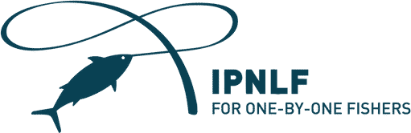
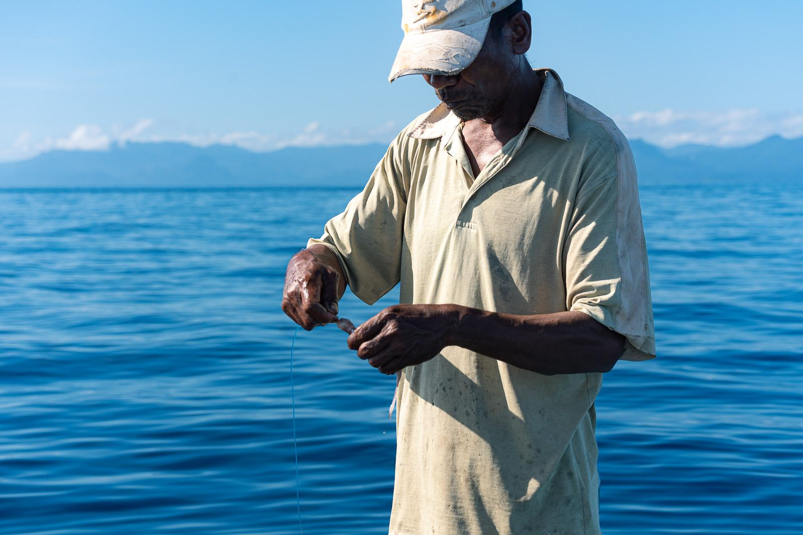
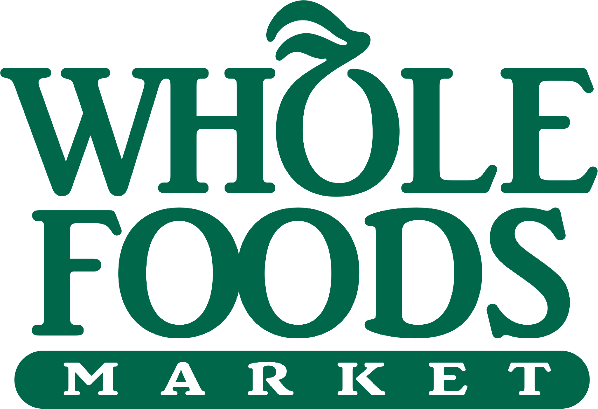
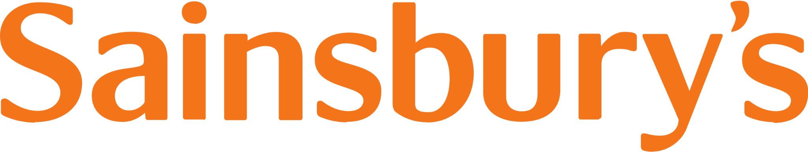
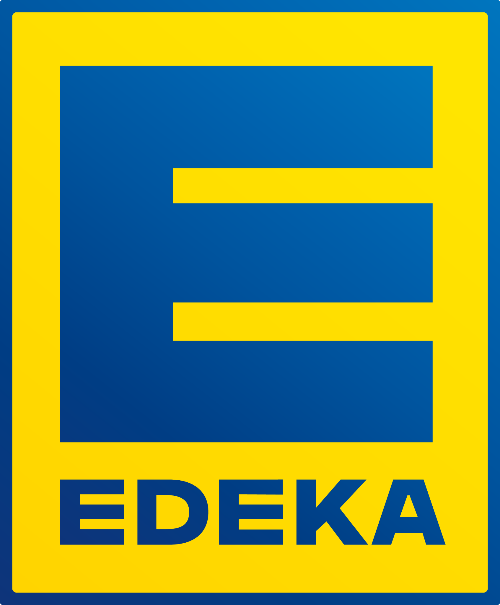
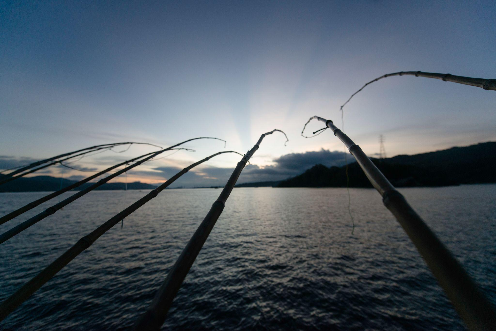

Sustainability leadership
Show your support for responsible sourcing.


Membership · One fish at a time
One-by-one tuna fishing protects fish populations and coastal livelihoods and keeps ocean ecosystems healthy. Joining IPNLF connects you to the markets, tools, and a community supporting fishers and leading the change.
One movement, practical action
IPNLF brings members, fisheries and technical expertise together around the issues that determine the future of one-by-one tuna.
What you get
Practical support and shared influence—the things that move responsible sourcing forward.
Show your support for responsible sourcing.
Access to fisheries specialists and in-country consultants.
Updates from key ocean policy meetings.
Amplify your impact through collective action.
Buying guides incorporating the latest science and regulation.
Networking events and learning opportunities.
Trusted worldwide by



WoolworthsIn their words
Joining IPNLF amplifies our collective efforts to be a positive force for change for our oceans and the fishing communities who depend on them. IPNLF has been a key partner, helping us develop our canned tuna sourcing policy, and supporting Whole Foods Market’s mission to move the seafood industry toward greater sustainability.
We're incredibly happy to work with IPNLF to have access to their expertise as well as being part of the global IPNLF business network, which enables us to expand our reach.
Our IPNLF Membership underlines our commitment to safeguarding one-by-one tuna fisheries and the communities they support, and we look forward to contributing to the organisation’s essential work in this space.
EDEKA's IPNLF membership represents a further step in our commitment to protecting the oceans and fish stocks, and to promoting responsible tuna fishing—because pole-and-line fishing is one of the most sustainable methods.

Become part of a global network protecting one-by-one fisheries and the communities that depend on them.